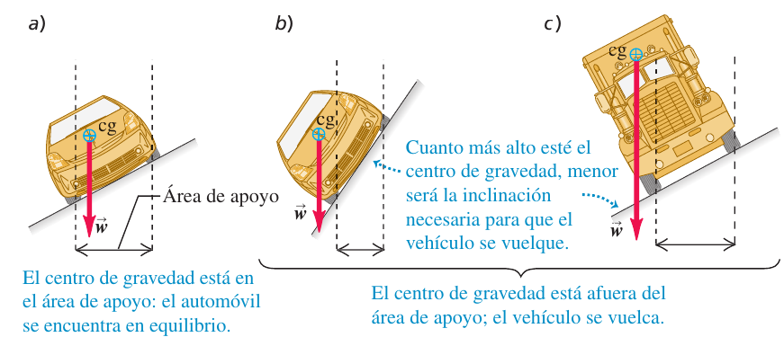
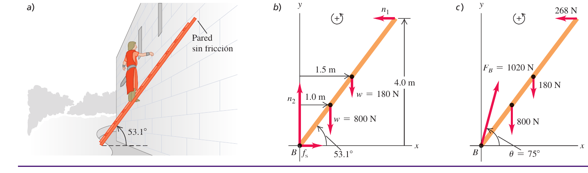
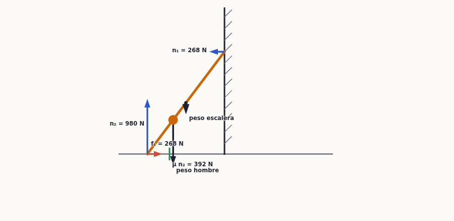
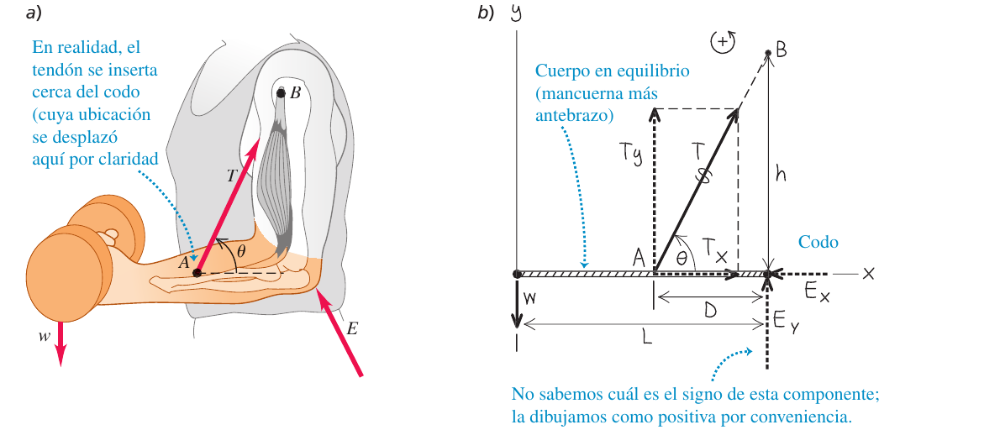
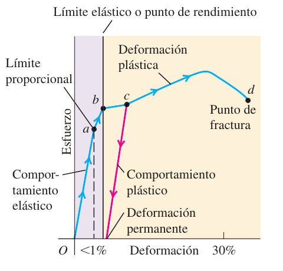
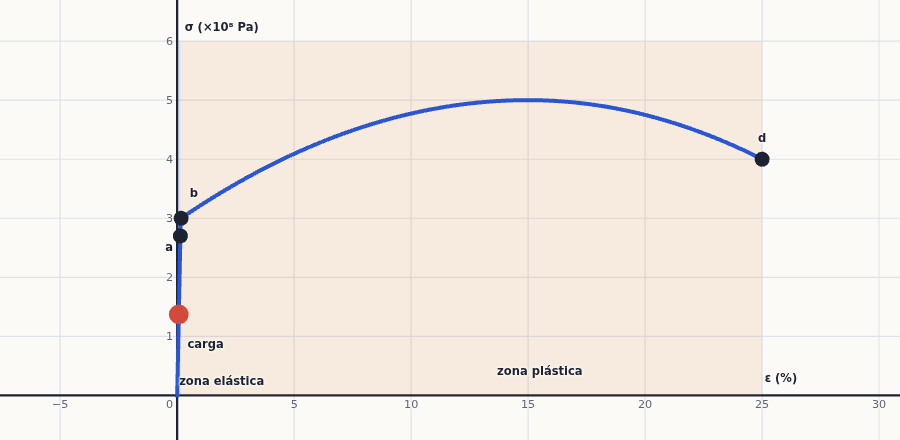

Equilibrio y elasticidad
Un puente, una escalera apoyada en la pared, tu antebrazo sosteniendo una mancuerna: todos están quietos aunque actúen fuerzas sobre ellos. Aquí aprendes cuándo un cuerpo rígido no se traslada ni gira (dos condiciones, $\sum\vec F=0$ y $\sum\vec\tau=0$), cómo se plantea y se resuelve un problema de equilibrio, y qué le pasa a un cuerpo real cuando lo estiras, lo comprimes o lo cortas (esfuerzo, deformación y módulos de elasticidad).
0Antes de empezar U p.339
Prerrequisitos: las leyes de Newton y los diagramas de cuerpo libre (temas 4 y 5), incluidas la fuerza normal y la fricción estática $f_s\le\mu_sn$; el centro de masa (tema 8); y, sobre todo, la torca $\tau=Fl=rF\,\mathrm{sen}\,\varphi$ y el signo de las torcas (tema 10). Aquí no aparece nada nuevo de rotación: es el caso $\alpha=0$ de todo lo anterior. Para la parte de elasticidad solo necesitas la idea de fuerza por unidad de área (presión, 1 Pa = 1 N/m²) y la ley de Hooke del resorte (tema 6).
Mapa del tema: 11.1 enuncia las dos condiciones de equilibrio. 11.2 explica el centro de gravedad (dónde «actúa» el peso). 11.3 es el corazón práctico: cómo resolver problemas de equilibrio (escaleras, vigas con cable y bisagra, el brazo humano). 11.4 y 11.5 cambian de enfoque: ya no hay cuerpos «rígidos», sino que se miden esfuerzo, deformación y módulos ($Y$, $B$, $S$) y se ve qué ocurre al pasar el límite elástico hasta la fractura.
Se han revisado todas las convocatorias disponibles (2018-2025) y ningún problema ni pregunta de teoría trata equilibrio de cuerpos rígidos, centro de gravedad o elasticidad. Por eso este tema no tiene ejercicios «X»: los ejercicios resueltos son el problema práctico del libro (U) y problemas del solucionario (E), más los ejemplos de U en la teoría. Aun así la técnica es muy útil: es exactamente la misma que la de los problemas de torcas y rodadura del tema 10 y de estática de poleas y planos de los temas 4 y 5. Además, este tema cierra el módulo 2 (temas 6-11) del curso.
P- Dibuja el cuerpo solo (diagrama de cuerpo libre) con todas las fuerzas externas y dónde se aplican: pesos en el centro de gravedad, normales, fricción, tensiones a lo largo del cable, y la fuerza de una bisagra como dos componentes desconocidas.
- Cuenta las incógnitas. En el plano hay tres ecuaciones independientes ($\sum F_x=0$, $\sum F_y=0$, $\sum\tau_z=0$): necesitas tres incógnitas como máximo.
- Elige el punto de las torcas donde se cruzan fuerzas desconocidas (la bisagra, el pie de la escalera): no producen torca y desaparecen de la ecuación.
- Calcula cada torca con el brazo de palanca perpendicular $l=r\,\mathrm{sen}\,\varphi$ y el signo (antihorario $+$).
- Comprueba con otro punto de referencia: si $\sum\tau=0$ respecto a un punto y $\sum\vec F=0$, es cero respecto a cualquiera; los resultados deben coincidir.
1Condiciones de equilibrio U p.340
Un cuerpo «aguanta quieto» si no se mueve ni gira. Para que no se mueva, las fuerzas deben compensarse (como en un tira y afloja empatado). Pero eso no basta: si empujas hacia arriba por un lado de una barra y hacia abajo por el otro con la misma fuerza, la fuerza total es cero... y la barra gira (así se mueve el volante de un coche). Hacen falta dos condiciones: una para la traslación y otra para la rotación.
U p.340Primera condición (el centro de masa no se acelera): la fuerza neta externa es cero. $$\sum\vec F=0\qquad\text{(ec. 11.1)}$$ Segunda condición (el cuerpo no tiene aceleración angular): la torca neta externa, calculada respecto a cualquier punto, es cero. $$\sum\vec\tau=0\qquad\text{(ec. 11.2)}$$ Un cuerpo rígido solo puede estar en equilibrio si se cumplen las dos. Cuando está además en reposo se llama equilibrio estático. (Un cuerpo que se traslada con velocidad constante y sin girar también está en equilibrio, pero no estático.) En problemas planos, en el plano $xy$, las dos condiciones son tres ecuaciones: $\sum F_x=0$, $\sum F_y=0$, $\sum\tau_z=0$ (ec. 11.6).
U p.340, 343Creer que $\sum\vec F=0$ es suficiente. Un par de fuerzas (dos fuerzas iguales, opuestas y no alineadas) tiene fuerza neta cero pero torca distinta de cero: el cuerpo gira. Y al revés: una fuerza única aplicada en el centro de masa no produce torca respecto a ese punto, pero acelera el cuerpo.
U p.3402Centro de gravedad U p.340-343
El peso de un cuerpo no actúa en un solo punto: cada trocito de materia pesa. Pero, a efectos de torca, es como si todo el peso actuara en un único punto: el centro de gravedad. Si apoyas una regla justo en ese punto, se queda horizontal; si apoyas en otro, cae hacia el lado más pesado. Cuanto más lejos del apoyo está una masa, más «palanca» hace, por eso el punto de equilibrio queda más cerca de la masa mayor (una balanza de brazos desiguales).
U p.340-342El centro de masa de un conjunto de partículas (o de piezas, cada una concentrada en su propio centro) es $$x_{cm}=\frac{m_1x_1+m_2x_2+\cdots}{m_1+m_2+\cdots}=\frac{\sum m_ix_i}{\sum m_i},\qquad \vec r_{cm}=\frac{\sum m_i\vec r_i}{\sum m_i}\qquad\text{(ecs. 11.3-11.4)}$$ La torca gravitacional total respecto a cualquier punto es $\vec\tau=\vec r_{cm}\times M\vec g=\vec r_{cm}\times\vec w$ (ec. 11.5): la misma que si todo el peso actuara en el centro de masa. Si $\vec g$ vale lo mismo en todos los puntos del cuerpo, el centro de gravedad coincide con el centro de masa. En un cuerpo homogéneo y simétrico (esfera, cubo, barra, placa rectangular) está en su centro geométrico.
U p.341-342En rigor el centro de gravedad solo coincide con el centro de masa si $g$ es igual en todo el cuerpo. La variación es ínfima: en las Torres Petronas (452 m de altura, fig. 11.3 de U) $g$ en la base es solo un 0,014 % mayor que en la punta y su centro de gravedad está apenas 2 cm bajo el centro de masa. En todo este capítulo se supone, por tanto, cg = cm.
U p.342Un cuerpo apoyado en varios puntos está en equilibrio mientras la vertical que baja desde su centro de gravedad cae dentro del área delimitada por los apoyos. Cuanto más bajo está el cg y mayor es el área de apoyo, más difícil es volcarlo: por eso los camiones (cg alto) vuelcan en pendientes en las que un coche aguanta, y los cuadrúpedos son más estables que los bípedos.
U p.342-343
Una tabla uniforme de longitud $L=6{,}0$ m y masa $M=90$ kg descansa sobre dos caballetes separados $D=1{,}5$ m y equidistantes del centro de la tabla. Throckmorton quiere ponerse de pie en el extremo derecho. Si la tabla no debe moverse, ¿qué masa máxima puede tener?
- Situación límite. Justo antes de volcar, el cg del sistema tabla + Throckmorton está exactamente sobre el caballete derecho. Origen en el centro de la tabla, eje $x$ a la derecha: la tabla está en $x=0$, él en $x=L/2=3{,}0$ m y el caballete derecho en $x_S=D/2$.
- Centro de gravedad (11.3). $x_{cg}=\dfrac{M(0)+m(L/2)}{M+m}=\dfrac{mL}{2(M+m)}$. Igualándolo a $D/2$: $mL=(M+m)D$.
- Despejar: $m=\dfrac{M\,D}{L-D}=\dfrac{(90\ \text{kg})(1{,}5\ \text{m})}{6{,}0\ \text{m}-1{,}5\ \text{m}}=\mathbf{30\ kg}$.
- Comprobación con otro origen (el caballete derecho): $x_{cg}=\dfrac{M(-D/2)+m[(L/2)-(D/2)]}{M+m}=0$ ⇒ $m=\dfrac{MD/2}{(L-D)/2}=30$ kg. El resultado no depende del origen. Un adulto de 60 kg solo podría ponerse a la mitad de la distancia entre el caballete derecho y el extremo.
- Cuelga el objeto de un punto cualquiera: en equilibrio, el cg queda en la vertical que pasa por ese punto (si no, el peso haría torca y el objeto giraría).
- Traza esa vertical sobre el objeto (un hilo con plomada).
- Cuelga el objeto de otro punto y traza la nueva vertical.
- El cg está en el cruce de las dos verticales (fig. 11.4 de U, un tarro de café).
3Resolver problemas de equilibrio de cuerpos rígidos U p.343-347
Un problema de equilibrio es un problema de contabilidad de fuerzas y de palancas. Tienes un cuerpo quieto, unas fuerzas que conoces (pesos) y otras que «se ajustan solas» para que todo cuadre (normales, fricción, tensiones, fuerza de una bisagra). Las ecuaciones $\sum F_x=0$, $\sum F_y=0$, $\sum\tau=0$ dicen cuánto vale cada una. El truco que lo hace fácil: al calcular torcas puedes elegir cualquier punto, así que eliges el que «elimina» las fuerzas que no te interesan.
U p.343- Identificar: el cuerpo debe poder tratarse como rígido, sin giro ni aceleración. Decide qué incógnitas hay.
- Plantear: dibuja la situación, y después un diagrama de cuerpo libre con todas las fuerzas externas y su punto de aplicación; elige ejes, el sentido positivo de las torcas y el punto de referencia.
- Ejecutar: escribe $\sum F_x=0$, $\sum F_y=0$, $\sum\tau_z=0$; tantas ecuaciones como incógnitas, tomando torcas respecto a dos o más puntos si hace falta.
- Evaluar: repite con otro punto de referencia; deben salir las mismas respuestas.
La torca depende del punto que elijas, pero una vez elegido, usa el mismo punto para todas las torcas de esa ecuación. Y no supongas que la fuerza de una bisagra va «a lo largo de la viga»: su dirección es desconocida, por eso se pone con dos componentes. La tensión de un cable, en cambio, sí va siempre a lo largo del cable.
U p.343, 345Un atleta de 1,80 m en posición de plancha se apoya solo en los dedos de los pies y en los antebrazos. Dos básculas indican que el 34,0 % de su peso $w$ cae en los dedos y el 66,0 % en los antebrazos; la distancia de los dedos a los antebrazos es 1,53 m. ¿A qué distancia de los dedos está su centro de gravedad?
- Modelo. Cuerpo rígido en reposo: valen las condiciones (11.6). Su peso actúa en el cg, que debe estar entre los dos apoyos. Fuerzas verticales: $n_T=0{,}340\,w$ en los dedos (T), $n_F=0{,}660\,w$ en los antebrazos (F) y $w$ a una distancia $L_{cg}$ de T. No hay fuerzas horizontales. $\sum F_y=0{,}340w+0{,}660w-w=0$ se cumple sola (por eso las básculas suman el 100 %).
- Punto de torcas en T: la fuerza $n_T$ no produce torca y la única incógnita es $L_{cg}$. Con antihorario $+$: $\;0{,}340w(0)-w\,L_{cg}+0{,}660w\,(1{,}53\ \text{m})=0$.
- Resultado. $L_{cg}=0{,}660\cdot1{,}53\ \text{m}\approx\mathbf{1{,}01\ m}$ desde los dedos. El peso $w$ se simplifica: no hace falta conocerlo.
- Comprobación con otro punto (respecto a F): $-0{,}340w(1{,}53)+w(1{,}53-L_{cg})=0$ ⇒ $1{,}53-L_{cg}=0{,}52$ m ⇒ $L_{cg}=1{,}01$ m. Coincide.
El apoyo que soporta más fracción del peso es el más cercano al centro de gravedad (aquí los antebrazos, 66 %, están a 0,52 m del cg; los dedos, 34 %, a 1,01 m). Regla rápida: $n_1\,d_1=n_2\,d_2$.
PSir Lancelot (800 N) sube por una escalera uniforme de 5,0 m y 180 N apoyada en una pared vertical sin fricción; forma 53,1° con la horizontal. Se detiene a un tercio del camino. a) Fuerzas normal y de fricción en la base. b) Coeficiente de fricción estática mínimo para que no resbale. c) Magnitud y dirección de la fuerza de contacto en la base.
- Geometría. 53,1° es el triángulo 3-4-5: con 5,0 m de escalera, la base está a 3,0 m de la pared y el apoyo superior a 4,0 m de altura. El peso de la escalera actúa en su centro (a 1,5 m de la pared en horizontal) y Lancelot está a $\tfrac13\cdot3{,}0=1{,}0$ m.
- DCL. Pared lisa: solo $n_1$ horizontal. Suelo: normal $n_2$ vertical y fricción $f_s$ hacia la pared. Pesos 180 N y 800 N. Tres incógnitas: $n_1,n_2,f_s$.
- Fuerzas (11.6). $\sum F_x=f_s-n_1=0$; $\sum F_y=n_2-800-180=0$ ⇒ $n_2=\mathbf{980\ N}$.
- Torcas respecto a la base B (ahí actúan $n_2$ y $f_s$, que desaparecen). Brazo de $n_1$: la altura 4,0 m; brazos de los pesos: sus distancias horizontales. $\sum\tau_B=n_1(4{,}0)-180(1{,}5)-800(1{,}0)=0$ ⇒ $n_1=1070/4{,}0\approx\mathbf{268\ N}$, y $f_s=n_1=\mathbf{268\ N}$.
- b) Para no resbalar: $f_s\le\mu_sn_2$ ⇒ $(\mu_s)_{\text{mín}}=f_s/n_2=268/980=\mathbf{0{,}27}$.
- c) La fuerza de contacto en B es la suma vectorial de normal y fricción: $\vec F_B=(268\ \text{N})\hat\imath+(980\ \text{N})\hat\jmath$, de modo que $F_B=\sqrt{268^2+980^2}\approx1{,}02\times10^3\ \text{N}$ (1016 N) y $\theta=\arctan(980/268)\approx\mathbf{75^\circ}$ sobre la horizontal. No va a lo largo de la escalera (53,1°): si lo hiciera, su torca respecto al extremo superior sería cero y la de los pesos quedaría sin compensar.


El antebrazo horizontal sostiene una mancuerna de peso $w$ a una distancia $L$ del codo. El bíceps tira, mediante un tendón, con una fuerza $\vec T$ que forma un ángulo $\theta$ con el antebrazo y se aplica a una distancia $D$ del codo (se desprecia el peso del antebrazo). El codo ejerce sobre el antebrazo una fuerza $\vec E$ de dirección desconocida. Calcula $T$, $E_x$ y $E_y$ para $w=200$ N, $D=0{,}050$ m, $L=0{,}30$ m y $\theta=80^\circ$.
- Incógnitas: $T$, $E_x$, $E_y$ (tres), tres ecuaciones. Sea $h=D\tan\theta$ la altura a la que «apunta» el tendón sobre el codo.
- Torcas respecto al codo (elimina $E_x$ y $E_y$): $\;T\,\mathrm{sen}\,\theta\,D-L\,w=0$ ⇒ $T=\dfrac{Lw}{D\,\mathrm{sen}\,\theta}=\dfrac{(0{,}30)(200)}{(0{,}050)(0{,}98)}\approx\mathbf{1220\ N}$ (¡seis veces el peso!). El tendón se inserta muy cerca del codo, así que su brazo de palanca es pequeño.
- $\sum F_x=0$: las componentes horizontales se cancelan: $E_x=T\cos\theta=\dfrac{Lw}{h}\approx\mathbf{210\ N}$.
- $\sum F_y=0$: $T\,\mathrm{sen}\,\theta+E_y-w=0$ ⇒ $E_y=-\dfrac{(L-D)\,w}{D}=-\mathbf{1000\ N}$. El signo menos indica que, en realidad, $\vec E$ apunta hacia abajo.
- Módulo: $E=\sqrt{E_x^2+E_y^2}\approx1020$ N. El peso del antebrazo (unos 20 N) es despreciable frente a estas fuerzas.

Cuando una fuerza desconocida actúe en un punto (bisagra, codo, pie de escalera), toma las torcas respecto a ese punto: te ahorras dos incógnitas de golpe. Y si el resultado de una componente sale negativo no es un error: significa que apunta al revés de como la dibujaste.
U p.346-3474Esfuerzo, deformación y módulos de elasticidad U p.347-353
El «cuerpo rígido» es una idealización: en la vida real todo se estira, se comprime o se tuerce un poco cuando lo cargas. Una cuerda de escalada se alarga algo cuando cuelgas de ella; un buzo se «encoge» muy poco a gran profundidad; un listón se deforma al cortarlo con unas tijeras. La regla general (la de un resorte, pero para materiales) es sencilla: cuanto más fuerte tiras por cada centímetro cuadrado, más se deforma fracción por fracción, y en proporción directa (siempre que no te pases). Lo que importa no es la fuerza total, sino la fuerza por unidad de área (esfuerzo) y la fracción que cambia el tamaño (deformación): así un alambre fino y uno grueso del mismo material se comparan con la misma constante.
U p.347En las deformaciones elásticas, el esfuerzo (fuerza por unidad de área) es proporcional a la deformación (cambio fraccionario). Su cociente es una constante del material, el módulo de elasticidad: $$\frac{\text{esfuerzo}}{\text{deformación}}=\text{módulo de elasticidad}\qquad\text{(ec. 11.7)}$$ Hay tres tipos de esfuerzo y, para cada uno, un módulo.
U p.347Una barra de longitud $l_0$ y área transversal $A$ sometida a fuerzas $F_\perp$ perpendiculares a la sección (que la estiran o la comprimen): $$\text{esfuerzo}=\frac{F_\perp}{A}\ \text{(11.8)},\qquad \text{deformación}=\frac{\Delta l}{l_0}\ \text{(11.9)},\qquad Y=\frac{F_\perp/A}{\Delta l/l_0}=\frac{F_\perp\,l_0}{A\,\Delta l}\ \text{(11.10)}$$ El esfuerzo se mide en pascales (1 Pa = 1 N/m²) y la deformación es adimensional, así que $Y$ también va en Pa. El mismo $Y$ vale para estirar y para comprimir. Un material con $Y$ grande (acero) es rígido; con $Y$ pequeño (goma), blando. Despejando: $\Delta l=\dfrac{F_\perp\,l_0}{A\,Y}$.
U p.348-349Si las fuerzas de los extremos empujan en lugar de jalar, la barra está en compresión: el esfuerzo y la deformación se definen igual (con $\Delta l$ en sentido contrario) y la ley de Hooke y (11.10) valen mientras el esfuerzo no sea muy grande. Muchos materiales tienen el mismo $Y$ en tensión y en compresión, pero no el hormigón (concreto): aguanta compresión y falla con una tensión comparable. Por eso los romanos y otras civilizaciones usaban arcos: el peso de encima comprime las piedras y no las pone en tensión.
Con frecuencia un cuerpo sufre ambas a la vez. Una viga horizontal apoyada en sus extremos se pandea por su peso: la parte superior queda en compresión y la inferior en tensión, y en la línea central no hay ni una ni otra. Por eso la sección en I es ancha arriba y abajo (donde están los esfuerzos) y angosta en el centro (ahorra peso).
U p.349Cuando un fluido (o un sólido) se comprime por todos lados, el esfuerzo es la presión $p=F_\perp/A$ (ec. 11.11; un escalar, no un vector) y la deformación es el cambio fraccionario de volumen $\Delta V/V_0$ (ec. 11.12). El módulo volumétrico es $$B=-\frac{\Delta p}{\Delta V/V_0}\quad\text{(11.13)},\qquad k=\frac1B\ \text{(compresibilidad, 11.14)}$$ El signo menos es porque un aumento de presión ($\Delta p>0$) reduce el volumen ($\Delta V<0$): así $B>0$. Una $B$ grande significa que el material es difícil de comprimir. Para el agua, $k=46{,}4\times10^{-6}\ \text{atm}^{-1}$ (tabla 11.2).
U p.350-351Cuando las fuerzas son tangentes a las superficies (como unas tijeras o el cortado de un libro con la mano), el cuerpo se deforma sin cambiar de volumen: una cara se desplaza una distancia $x$ respecto a la opuesta, separada $h$: $$\text{esfuerzo}=\frac{F_\parallel}{A}\ \text{(11.15)},\qquad\text{deformación}=\frac{x}{h}\ \text{(11.16)},\qquad S=\frac{F_\parallel/A}{x/h}=\frac{F_\parallel\,h}{A\,x}\ \text{(11.17)}$$ Aquí $A$ es el área de la cara paralela a la fuerza. Para un material dado, $S$ suele ser de un tercio a un medio de $Y$. Solo existe en sólidos (los fluidos no resisten el corte).
U p.352| Material | $Y$ (Young) | $B$ (volumétrico) | $S$ (corte) |
|---|---|---|---|
| Aluminio | $7{,}0\times10^{10}$ | $7{,}5\times10^{10}$ | $2{,}5\times10^{10}$ |
| Latón | $9{,}0\times10^{10}$ | $6{,}0\times10^{10}$ | $3{,}5\times10^{10}$ |
| Cobre | $11\times10^{10}$ | $14\times10^{10}$ | $4{,}4\times10^{10}$ |
| Hierro | $21\times10^{10}$ | $16\times10^{10}$ | $7{,}7\times10^{10}$ |
| Plomo | $1{,}6\times10^{10}$ | $4{,}1\times10^{10}$ | $0{,}6\times10^{10}$ |
| Níquel | $21\times10^{10}$ | $17\times10^{10}$ | $7{,}8\times10^{10}$ |
| Goma de silicona | $0{,}001\times10^{10}$ | $0{,}2\times10^{10}$ | $0{,}0002\times10^{10}$ |
| Acero | $20\times10^{10}$ | $16\times10^{10}$ | $7{,}5\times10^{10}$ |
| Tendón (típico) | $0{,}12\times10^{10}$ | — | — |
- Dejar el área en cm² o mm²: pasa siempre a m² ($1\ \text{cm}^2=10^{-4}\ \text{m}^2$, $1\ \text{mm}^2=10^{-6}\ \text{m}^2$) antes de dividir.
- Usar el diámetro como radio en $A=\pi r^2=\pi d^2/4$.
- Confundir el módulo: $Y$ para estirar o comprimir, $B$ para presión por todos lados, $S$ para fuerzas tangentes.
- Mezclar unidades de presión: $k$ en atm$^{-1}$ con $\Delta p$ en Pa (1 atm $=1{,}013\times10^5$ Pa).
- Olvidar que un esfuerzo volumétrico reduce el volumen ($\Delta V<0$): el signo menos de (11.13).
Una varilla de acero de 2,0 m de longitud y $0{,}30\ \text{cm}^2$ de área transversal se cuelga de un soporte y de su extremo libre se cuelga una fresadora de 550 kg. Determina el esfuerzo, la deformación y el alargamiento.
- Esfuerzo (11.8). $F_\perp=mg=550\cdot9{,}8=5390$ N; $A=0{,}30\ \text{cm}^2=3{,}0\times10^{-5}\ \text{m}^2$. $\sigma=F_\perp/A=1{,}80\times10^{8}\ \text{Pa}\approx\mathbf{1{,}8\times10^8\ Pa}$.
- Deformación (de 11.10: $\Delta l/l_0=\sigma/Y$). Acero: $Y=20\times10^{10}$ Pa (tabla 11.1): $1{,}8\times10^8/2{,}0\times10^{11}=\mathbf{9{,}0\times10^{-4}}$.
- Alargamiento. $\Delta l=(\Delta l/l_0)\,l_0=9{,}0\times10^{-4}\cdot2{,}0\ \text{m}=\mathbf{1{,}8\ mm}$ (el peso propio de la varilla se desprecia).
Una prensa hidráulica contiene $0{,}25\ \text{m}^3$ (250 L) de aceite. Calcula la disminución de volumen del aceite cuando se somete a un aumento de presión $\Delta p=1{,}6\times10^7$ Pa (unas 160 atm). El módulo volumétrico del aceite es $B=5{,}0\times10^9$ Pa (aproximadamente $5{,}0\times10^4$ atm) y su compresibilidad es $k=1/B=20\times10^{-6}\ \text{atm}^{-1}$.
- Deformación: de (11.13), $\dfrac{\Delta V}{V_0}=-\dfrac{\Delta p}{B}=-\dfrac{1{,}6\times10^7}{5{,}0\times10^9}=-3{,}2\times10^{-3}$ (un $-0{,}32\ \%$).
- Cambio de volumen: $\Delta V=-3{,}2\times10^{-3}\cdot0{,}25\ \text{m}^3=\mathbf{-8{,}0\times10^{-4}\ m^3}$.
- Por la otra vía (con atmósferas, ec. 11.14): $\Delta V=-k\,V_0\,\Delta p=-(20\times10^{-6}\ \text{atm}^{-1})(0{,}25\ \text{m}^3)(160\ \text{atm})=-8{,}0\times10^{-4}\ \text{m}^3$. El signo menos indica que el volumen disminuye; aunque 160 atm es una presión grande, el cambio fraccionario es muy pequeño.
La placa de latón de la base de una escultura exterior experimenta fuerzas de corte causadas por un terremoto. La placa cuadrada mide 0,80 m por lado y 0,50 cm de espesor. ¿Qué fuerza se ejerce en cada uno de sus extremos (cantos superior e inferior) si el desplazamiento resultante es $x=0{,}16$ mm? ($S=3{,}5\times10^{10}$ Pa para el latón.)
- Planteamiento. Se aplica una fuerza $F_\parallel$ tangente al canto superior y otra igual y opuesta al canto inferior; la dimensión transversal es $h=0{,}80$ m. La incógnita es $F_\parallel$.
- Deformación (11.16): $x/h=0{,}16\times10^{-3}/0{,}80=\mathbf{2{,}0\times10^{-4}}$.
- Esfuerzo (de 11.17): $F_\parallel/A=S\,(x/h)=(3{,}5\times10^{10})(2{,}0\times10^{-4})=\mathbf{7{,}0\times10^{6}\ Pa}$.
- Fuerza en cada canto: el área de cada canto es $A=(0{,}80\ \text{m})(0{,}0050\ \text{m})=4{,}0\times10^{-3}\ \text{m}^2$ ⇒ $F_\parallel=\sigma A=\mathbf{2{,}8\times10^{4}\ N}$.
5Elasticidad y plasticidad U p.353-354
La ley de Hooke «esfuerzo ∝ deformación» solo vale si no te pasas. Estira un clip: al principio vuelve a su forma; si lo estiras mucho, se queda doblado para siempre; si sigues, se rompe. La gráfica esfuerzo–deformación de un metal cuenta esa historia en una curva: una recta al principio (Hooke), un tramo todavía reversible, un «punto de no retorno», una zona donde el material fluye y queda deformado, y por último la fractura.
U p.353- Límite proporcional (a): hasta aquí la curva es una recta y vale la ley de Hooke.
- Límite elástico o punto de rendimiento (b): entre $a$ y $b$ el material sigue siendo elástico (si descargas, recupera su longitud) aunque ya no sea proporcional. El esfuerzo en $b$ es el límite elástico. Suele corresponder a deformaciones menores del 1 %.
- Zona plástica ($b\to d$): si cargas más allá de $b$ (hasta $c$, por ejemplo) y luego descargas, el material no vuelve a $\varepsilon=0$: sigue una recta aproximadamente paralela a la primera y queda una deformación permanente.
- Punto de fractura (d): el material se rompe. El esfuerzo que lo causa es el esfuerzo de ruptura (para tensión, resistencia a la tensión). Un material dúctil se estira mucho en la zona plástica antes de romper (puede pasar del 30 %); uno frágil se rompe poco después del límite elástico.


Aluminio $2{,}2\times10^{8}$; latón $4{,}7\times10^{8}$; vidrio $10\times10^{8}$; hierro $3{,}0\times10^{8}$; acero $(5\text{–}20)\times10^{8}$; tendón (típico) $1\times10^{8}$. Dos materiales pueden tener constantes elásticas parecidas y esfuerzos de ruptura muy distintos: el hierro y el acero tienen casi el mismo $Y$ (rigidez comparable), pero el acero es más fuerte, porque tiene mayor esfuerzo de ruptura.
U p.354El caucho vulcanizado y los tendones no tienen una región plástica clásica. El caucho se estira más de siete veces su longitud sin perder la elasticidad, pero el esfuerzo no es proporcional a la deformación y, al descargar, sigue una curva distinta de la de carga (fig. 11.20 de U): es la histéresis elástica, causada por rozamiento interno. El trabajo hecho al deformarlo es mayor que el que se recupera; la diferencia se disipa en calor, y por eso el caucho se usa en soportes que amortiguan vibraciones.
U p.353Confundir «límite proporcional» con «límite elástico»: el primero es el final de la recta (Hooke); el segundo es el final de la recuperación completa. Y no aplicar $\Delta l=F\,l_0/(AY)$ cuando el esfuerzo supera el límite proporcional: la fórmula solo vale en la zona de Hooke.
U p.3536Ejercicios resueltos
Ninguna convocatoria de 2018 a 2025 incluye un problema de equilibrio o elasticidad, así que no hay ejercicios «X». Los nueve ejercicios E1-E9 son del solucionario (E, problemas de fin de capítulo traducidos y ampliados, de más fácil a más difícil) y, además, se resuelve el problema práctico del libro (U). Léelos con el método de las cinco etapas de la receta maestra. Los ejemplos 11.1 a 11.7 de U están resueltos en la teoría (§2 a §4).
PE1 — Ejercicio 11.1: barra con dos masas, ¿dónde se pone el apoyo? E U p.341-342, 357
Una barra uniforme de 50,0 cm de longitud y 0,120 kg tiene adherida una masa pequeña de 0,055 kg en su extremo izquierdo y otra de 0,110 kg en el derecho. Las masas se consideran puntuales. Se quiere equilibrar el sistema horizontalmente sobre un apoyo colocado justo bajo su centro de gravedad. ¿A qué distancia del extremo izquierdo debe colocarse?
- Idea. Un cuerpo apoyado en un solo punto está en equilibrio si ese punto está bajo el cg (la torca del peso respecto al apoyo es entonces cero). Con $g$ uniforme, cg = cm: basta calcular $x_{cm}$.
- Sustituir la barra uniforme por una partícula de 0,120 kg en su centro ($x=0{,}250$ m). Origen en el extremo izquierdo.
- Ecuación (11.3): $x_{cm}=\dfrac{(0{,}120)(0{,}250)+(0{,}055)(0)+(0{,}110)(0{,}500)}{0{,}120+0{,}055+0{,}110}=\dfrac{0{,}085}{0{,}285}=0{,}298$ m.
- Resultado: el apoyo va a 29,8 cm del extremo izquierdo: un poco a la derecha del centro, porque la masa de la derecha es mayor.
Olvidar en el denominador la masa situada en $x=0$ (no suma en el numerador, pero sí en la masa total).
E2 — Ejercicio 11.6: tabla llevada por dos personas E U p.343, 357
Dos personas llevan una tabla uniforme de madera de 3,00 m de longitud que pesa 160 N. Si una persona aplica una fuerza hacia arriba de 60 N en un extremo, ¿en qué punto sostiene la tabla la otra persona?
- DCL. Fuerzas verticales: $F_1=60$ N en el extremo izquierdo ($x=0$), el peso $w=160$ N en el centro ($x=1{,}50$ m) y $F_2$ a una distancia $x$ (ambas desconocidas). Dos incógnitas ⇒ $\sum F_y=0$ y $\sum\tau_z=0$.
- Fuerzas: $F_1+F_2-w=0$ ⇒ $F_2=160-60=\mathbf{100\ N}$.
- Torcas respecto al extremo izquierdo (ahí $F_1$ no da torca), antihorario $+$: $F_2\,x-w(1{,}50)=0$ ⇒ $x=\dfrac{160\cdot1{,}50}{100}=\mathbf{2{,}40\ m}$ del extremo de la primera persona.
- Comprobación respecto al centro: $F_1(1{,}50)-F_2(2{,}40-1{,}50)=90-90=0$ ✓. La persona más cercana al cg hace más fuerza.
Suponer que la segunda persona está en el otro extremo (entonces la tabla giraría, porque $F_2\neq w/2$).
E3 — Ejercicio 11.14: viga horizontal con cable y bisagra E U p.343, 358
La viga horizontal de la figura E11.14 pesa 190 N y su centro de gravedad está en su centro. Calcula a) la tensión del cable y b) las componentes horizontal y vertical de la fuerza que ejerce la pared sobre la viga. (La viga mide 4,00 m y está unida a la pared por una bisagra; del extremo libre cuelga una carga de 300 N; el cable, de 5,00 m, va del extremo libre a un punto de la pared 3,00 m más arriba que la bisagra.)
- Geometría del cable. Triángulo 3-4-5: el ángulo $\theta$ del cable con la viga cumple $\mathrm{sen}\,\theta=3/5=0{,}600$, $\cos\theta=4/5=0{,}800$.
- DCL de la viga. Peso 190 N en el centro (2,00 m de la bisagra); carga 300 N en el extremo (4,00 m); tensión $T$ en el extremo, hacia el punto de la pared: componentes $T\cos\theta$ (hacia la pared) y $T\,\mathrm{sen}\,\theta$ (hacia arriba); bisagra con $H_h$ y $H_v$ (dirección desconocida). Tres incógnitas: $T$, $H_h$, $H_v$.
- a) Torcas respecto a la bisagra ($H_h$ y $H_v$ no dan torca; $T\cos\theta$ tampoco, su recta es la propia viga): $T\,\mathrm{sen}\,\theta\,(4{,}00)-190(2{,}00)-300(4{,}00)=0$ ⇒ $T=\dfrac{380+1200}{4{,}00\cdot0{,}600}=\mathbf{658\ N}$.
- b) Fuerzas: $\sum F_x=H_h-T\cos\theta=0$ ⇒ $H_h=658\cdot0{,}800=\mathbf{527\ N}$ (la pared empuja la viga hacia fuera: el cable tira de ella hacia la pared). $\sum F_y=H_v+T\,\mathrm{sen}\,\theta-190-300=0$ ⇒ $H_v=490-395=\mathbf{95\ N}$ hacia arriba.
- Comprobación con otro punto. Respecto al extremo libre: $-H_v(4{,}00)+190(2{,}00)=0$ ⇒ $H_v=95$ N ✓. Respecto al punto de la pared donde se ata el cable: $H_h(3{,}00)-190(2{,}00)-300(4{,}00)=0$ ⇒ $H_h=527$ N ✓.
Suponer que la bisagra solo empuja a lo largo de la viga ($H_v=0$) o poner $T\cos\theta$ en la torca (su brazo de palanca es cero).
E4 — Ejercicio 11.10: escalera con fricción en el suelo, ¿hasta dónde puede subir el hombre? E U p.343-345, 357
Una escalera uniforme de 5,0 m de longitud que pesa 160 N descansa contra una pared vertical sin fricción con su base a 3,0 m de la pared. El coeficiente de fricción estática entre la base y el suelo es 0,40. Un hombre de 740 N sube lentamente. a) ¿Qué fuerza de fricción máxima puede ejercer el suelo en la base? b) ¿Cuál es la fricción cuando el hombre ha subido 1,0 m a lo largo de la escalera? c) ¿Hasta dónde puede subir antes de que la escalera resbale?
- Geometría. Escalera 5,0 m, base a 3,0 m ⇒ apoyo en la pared a $\sqrt{5^2-3^2}=4{,}0$ m (triángulo 3-4-5). Un punto a distancia $s$ a lo largo de la escalera está a $\tfrac35s$ en horizontal de la base.
- DCL. Pared lisa: solo $n_1$ horizontal. Suelo: $n_2$ vertical y fricción $f_s$ hacia la pared. Pesos: 160 N en el centro (1,5 m en horizontal) y 740 N del hombre.
- a) Fricción máxima. $\sum F_y=n_2-160-740=0$ ⇒ $n_2=900$ N sea cual sea la posición del hombre. $f_{s,\text{máx}}=\mu_sn_2=0{,}40\cdot900=\mathbf{360\ N}$.
- b) Hombre a 1,0 m. Torcas respecto a la base (elimina $n_2$ y $f_s$): $n_1(4{,}0)=160(1{,}5)+740(\tfrac35\cdot1{,}0)=240+444=684$ N·m ⇒ $n_1=171$ N. $\sum F_x=f_s-n_1=0$ ⇒ $f_s=\mathbf{171\ N}$, menor que 360 N: no resbala.
- c) Hasta dónde. Al subir crece la torca del hombre, luego $n_1$ y la fricción necesaria. En general $f_s=n_1=60+111\,s$ (N). Resbala cuando $f_s=360$ N: $360(4{,}0)=160(1{,}5)+740\cdot\tfrac35\,s$ ⇒ $s=\dfrac{1440-240}{444}=\mathbf{2{,}7\ m}$ a lo largo de la escalera (algo más de la mitad).
Usar 1,0 m como brazo de palanca del hombre (es la distancia a lo largo de la escalera; el brazo es la horizontal, 0,6 m); pensar que la normal del suelo crece al subir.
E5 — Problema 11.46: viga inclinada sostenida por cable y bisagra E U p.343, 361
Una viga uniforme de 8,0 m y 1150 kg está unida por una bisagra a la pared y sostenida por un cable delgado sujeto a 2,0 m del extremo libre (figura P11.46). La viga está a 30,0° sobre la horizontal y el cable forma 40,0° con la viga. a) Dibuja el diagrama de cuerpo libre. b) Calcula la tensión del cable. c) ¿Con qué fuerza empuja la viga contra la pared?
- Ángulos. El cable vuelve hacia la pared formando 40,0° con la viga; respecto a la horizontal forma $40{,}0^\circ-30{,}0^\circ=10{,}0^\circ$ subiendo hacia la pared. Así $\vec T$ tiene componente horizontal $T\cos10{,}0^\circ$ (hacia la pared) y vertical $T\,\mathrm{sen}\,10{,}0^\circ$ (hacia arriba).
- a) DCL. Peso $w=1150\cdot9{,}8=1{,}127\times10^4$ N en el centro (4,0 m de la bisagra a lo largo de la viga); $T$ en el punto a $8{,}0-2{,}0=6{,}0$ m de la bisagra; bisagra con $H_h$ y $H_v$.
- b) Torcas respecto a la bisagra (elimina $H_h$ y $H_v$). Brazo de palanca $=r\,\mathrm{sen}\,\varphi$ (10.2): para $T$, $r=6{,}0$ m y el ángulo entre viga y cable es 40,0° ⇒ $6{,}0\,\mathrm{sen}\,40{,}0^\circ=3{,}86$ m. Para el peso (vertical), el brazo es la distancia horizontal $4{,}0\cos30{,}0^\circ=3{,}46$ m. $$T=\frac{w\,(4{,}0)\cos30{,}0^\circ}{(6{,}0)\,\mathrm{sen}\,40{,}0^\circ}=\mathbf{1{,}01\times10^4\ N}.$$
- c) Empuje contra la pared. $\sum F_x=H_h-T\cos10{,}0^\circ=0$ ⇒ $H_h=\mathbf{9{,}97\times10^3\ N}$: la pared empuja la viga hacia fuera con esa fuerza y, por la tercera ley, la viga empuja la pared con $9{,}97\times10^3$ N ($\approx1{,}0\times10^4$ N).
- Ampliación ($H_v$). $\sum F_y=H_v+T\,\mathrm{sen}\,10{,}0^\circ-w=0$ ⇒ $H_v=1{,}127\times10^4-1758=9{,}51\times10^3$ N hacia arriba. La bisagra soporta casi todo el peso porque el cable es casi horizontal.
- Comprobación. $T<w$ porque el brazo de $T$ (3,86 m) es mayor que el de $w$ (3,46 m).
Usar 30° o 40° en las componentes horizontal y vertical de $T$ (es 10°); tomar los 8,0 m como brazo de $T$ (el cable se ata a 6,0 m).
E6 — Ejercicio 11.26: varillas de acero y de cobre en serie E U p.348-350, 359
Dos varillas circulares, una de acero y otra de cobre, se unen por los extremos. Cada una mide 0,750 m de longitud y 1,50 cm de diámetro. El conjunto se somete a una fuerza de tensión de 4000 N. Para cada varilla, determina a) la deformación y b) el alargamiento.
- Misma fuerza en las dos. Si cortas imaginariamente el conjunto por cualquier sección y aplicas $\sum F=0$ al trozo, la fuerza interna es 4000 N en toda la longitud: ambas soportan $F_\perp=4000$ N (están «en serie»).
- Área y esfuerzo. $A=\pi d^2/4=\pi(0{,}0150)^2/4=1{,}767\times10^{-4}\ \text{m}^2$. Esfuerzo (11.8): $F_\perp/A=2{,}26\times10^{7}$ Pa, igual en las dos.
- a) Deformación $=\text{esfuerzo}/Y$. Tabla 11.1: acero $Y=2{,}0\times10^{11}$ Pa, cobre $1{,}1\times10^{11}$ Pa. Acero: $2{,}26\times10^7/2{,}0\times10^{11}=\mathbf{1{,}1\times10^{-4}}$; cobre: $2{,}26\times10^7/1{,}1\times10^{11}=\mathbf{2{,}1\times10^{-4}}$.
- b) Alargamiento $=\text{deformación}\times l_0$. Acero: $\mathbf{8{,}5\times10^{-5}\ m}$ (0,085 mm); cobre: $\mathbf{1{,}5\times10^{-4}\ m}$ (0,15 mm). Alargamiento total 0,24 mm.
- Interpretación. Mismo esfuerzo, distinto material: se estira más el de menor $Y$ (el cobre).
Repartir la fuerza (2000 N a cada una) como si estuvieran en paralelo; usar el diámetro como radio en $A$.
E7 — Ejercicio 11.36: placa de acero sometida a corte E U p.352, 360
Una placa cuadrada de acero mide 10,0 cm por lado y 0,500 cm de espesor. a) Calcula la deformación por corte que se produce al aplicar a cada uno de los cuatro lados una fuerza de $9{,}0\times10^5$ N paralela a cada lado. b) Determina el desplazamiento $x$ en centímetros.
- Por qué es corte. Las fuerzas son paralelas a las caras sobre las que actúan: esfuerzo de corte $F_\parallel/A$ (11.15). Las cuatro fuerzas se equilibran por pares (fuerzas y torcas), así que la placa no se mueve: solo se deforma (el cuadrado pasa a rombo).
- Área. La cara lateral: lado × espesor $=0{,}100\cdot0{,}00500=5{,}00\times10^{-4}\ \text{m}^2$ (no la cara de $10\times10$ cm). La dimensión perpendicular al desplazamiento es $h=0{,}100$ m.
- Esfuerzo. $F_\parallel/A=9{,}0\times10^5/5{,}00\times10^{-4}=1{,}8\times10^{9}$ Pa.
- a) Deformación por corte $=\text{esfuerzo}/S$ (de 11.17), acero $S=7{,}5\times10^{10}$ Pa: $1{,}8\times10^9/7{,}5\times10^{10}=\mathbf{2{,}4\times10^{-2}}$.
- b) Desplazamiento. Deformación $=x/h$ (11.16) ⇒ $x=0{,}024\cdot0{,}100=2{,}4\times10^{-3}$ m $=\mathbf{0{,}24\ cm}$.
Usar el área de la cara grande ($10\times10$ cm) o el módulo de Young en vez del de corte.
E8 — Ejercicio 11.34: agua en el abismo Challenger E U p.350-351, 360
En el abismo Challenger de la Fosa de las Marianas, la profundidad del agua es 10,9 km y la presión es $1{,}16\times10^8$ Pa (cerca de $1{,}15\times10^3$ atm). a) Si se lleva un metro cúbico de agua de la superficie a esa profundidad, ¿cuánto cambiará su volumen? (La presión normal en la superficie es del orden de $1{,}0\times10^5$ Pa. Toma para el agua de mar la compresibilidad $k$ del agua dulce, tabla 11.2.) b) ¿Qué densidad tiene el agua de mar a esta profundidad? (En la superficie, $1{,}03\times10^3$ kg/m³.)
- Tipo de esfuerzo. El agua presiona por igual en todas direcciones: esfuerzo volumétrico. El esfuerzo es el aumento de presión: $\Delta p=1{,}16\times10^8-1{,}0\times10^5=1{,}159\times10^8$ Pa.
- Módulo. Tabla 11.2: $k=46{,}4\times10^{-6}\ \text{atm}^{-1}$. En Pa$^{-1}$ (1 atm $=1{,}013\times10^5$ Pa): $k=4{,}58\times10^{-10}\ \text{Pa}^{-1}$, y $B=1/k\approx2{,}2\times10^{9}$ Pa (11.14).
- a) Cambio de volumen (de 11.13): $\Delta V=-k\,\Delta p\,V_0=-(4{,}58\times10^{-10})(1{,}159\times10^8)(1{,}00)\approx\mathbf{-0{,}053\ m^3}$: el volumen disminuye un 5,3 %.
- b) Densidad. La masa no cambia: los $1{,}03\times10^3$ kg que ocupaban 1,00 m³ ocupan ahora $1{,}00-0{,}053=0{,}947$ m³. $\rho=1{,}03\times10^3/0{,}947=\mathbf{1{,}09\times10^3\ kg/m^3}$ (un 5,6 % mayor).
Mezclar $k$ en atm$^{-1}$ con $\Delta p$ en Pa; olvidar el signo (el volumen disminuye); calcular la nueva densidad con el signo cambiado.
E9 — Problema 11.83: varilla colgada de dos alambres distintos E U p.343-349, 366
Una varilla de 1,05 m de longitud y peso despreciable está sostenida en sus extremos por alambres A y B de igual longitud. El área transversal de A es 2,00 mm² y la de B, 4,00 mm². El módulo de Young de A es $1{,}80\times10^{11}$ Pa; el de B, $1{,}20\times10^{11}$ Pa. ¿En qué punto de la varilla debe colgarse un peso $w$ para producir a) esfuerzos iguales en A y B? b) ¿Y deformaciones iguales?
- Plan. Une las dos partes del tema: el equilibrio de la varilla relaciona las tensiones $T_A$ y $T_B$ con la posición $x$ del peso; la elasticidad traduce «igual esfuerzo» o «igual deformación» en una relación entre $T_A$ y $T_B$.
- Equilibrio. Peso $w$ a distancia $x$ de A. Torcas respecto al punto C del peso (así $w$ no aparece): $T_B(1{,}05-x)-T_A\,x=0$ ⇒ $\dfrac{T_B}{T_A}=\dfrac{x}{1{,}05-x}$. (Además $T_A+T_B=w$.)
- a) Esfuerzos iguales (11.8): $T_A/A_A=T_B/A_B$ ⇒ $T_B=\dfrac{4{,}00}{2{,}00}T_A=2T_A$. Entonces $2(1{,}05-x)=x$ ⇒ $x=\mathbf{0{,}70\ m}$ desde A ($T_A=w/3$, $T_B=2w/3$).
- b) Deformaciones iguales. Deformación $=\dfrac{T}{AY}$ (de 11.10): $\dfrac{T_A}{A_AY_A}=\dfrac{T_B}{A_BY_B}$ ⇒ $T_B=\dfrac{A_BY_B}{A_AY_A}T_A=\dfrac{(4{,}00)(1{,}20)}{(2{,}00)(1{,}80)}T_A=\dfrac43T_A$. Entonces $\tfrac43(1{,}05-x)=x$ ⇒ $x=\mathbf{0{,}60\ m}$ desde A ($T_A=3w/7$, $T_B=4w/7$).
- Interpretación. B es más grueso: para el mismo esfuerzo necesita el doble de tensión, así que el peso se acerca a B. Pero B es más «blando» (menor $Y$), lo que compensa en parte su mayor área en la deformación: el punto se acerca al centro (0,525 m). Como los alambres miden lo mismo, igual deformación = igual alargamiento ⇒ la varilla baja sin inclinarse.
Confundir esfuerzo (no depende de $Y$) con deformación (sí depende); tomar torcas respecto a A y olvidar que entonces aparece $w$ como incógnita adicional (se resuelve igual, con una ecuación más).
Problema práctico de U: «En equilibrio y bajo esfuerzo» (varilla de cobre con pivote y cable) U p.355
Una varilla sólida horizontal y uniforme de cobre, de longitud inicial $l_0$, área transversal $A$, módulo de Young $Y$, módulo volumétrico $B$, módulo de corte $S$ y masa $m$, está sostenida por un pivote sin fricción en su extremo derecho y por un cable a una distancia $l_0/4$ del extremo izquierdo. El pivote y el cable ejercen sus fuerzas de manera uniforme sobre la sección transversal. El cable forma un ángulo $\theta$ con la varilla y la comprime. a) Calcula la tensión del cable. b) Calcula la magnitud y dirección de la fuerza del pivote; compárala con la tensión y compara su ángulo con $\theta$. c) Determina el cambio de longitud de la varilla (pequeño frente a $l_0$). d) ¿En qué factor aumentaría el resultado de c) si la varilla fuera dos veces más larga con la misma sección?
- DCL. Eje $x$ a lo largo de la varilla hacia la pared, $y$ hacia arriba, origen en el extremo izquierdo. Fuerzas: peso $mg$ en el centro ($x=l_0/2$); tensión $T$ en $x=l_0/4$, con componentes $(T\cos\theta,\,T\,\mathrm{sen}\,\theta)$; fuerza del pivote $(P_x,P_y)$ en $x=l_0$, de dirección desconocida. Incógnitas $T,P_x,P_y$ ⇒ las tres ecuaciones (11.6).
- a) Torcas respecto al pivote (elimina $P_x$ y $P_y$). $T\cos\theta$ está sobre la recta de la varilla: torca cero. Brazos: $T\,\mathrm{sen}\,\theta$ a $\tfrac34l_0$ del pivote; $mg$ a $\tfrac12l_0$: $T\,\mathrm{sen}\,\theta\cdot\tfrac34l_0=mg\cdot\tfrac12l_0$ ⇒ $$T=\frac{2mg}{3\,\mathrm{sen}\,\theta}.$$
- b) Fuerzas. $\sum F_x=T\cos\theta+P_x=0$ ⇒ $P_x=-\dfrac{2mg}{3\tan\theta}$ (el pivote empuja alejándose de la pared: el cable aprieta la varilla contra él). $\sum F_y=T\,\mathrm{sen}\,\theta+P_y-mg=0$ ⇒ $P_y=\dfrac{mg}{3}$ (hacia arriba).
- Módulo y ángulo. $P=\dfrac{mg}{3}\sqrt{\dfrac{4}{\tan^2\theta}+1}$, y el ángulo $\phi$ sobre la horizontal cumple $\tan\phi=P_y/|P_x|=\tfrac12\tan\theta$.
- Comparación. $T=\dfrac{mg}{3}\sqrt{\dfrac{4}{\tan^2\theta}+4}$: como $1<4$, $P<T$ (de hecho $P/T=\sqrt{1-\tfrac34\mathrm{sen}^2\theta}$), y como $\tan\phi=\tfrac12\tan\theta$, $\phi<\theta$. Interpretación: el cable soporta $\tfrac23$ del peso y el pivote $\tfrac13$, lógico porque el cable está más cerca del centro de la varilla ($\tfrac14l_0$ frente a $\tfrac12l_0$).
- c) ¿Qué tramo se comprime? Las fuerzas horizontales son $T\cos\theta$ (en $x=l_0/4$, hacia la pared) y $P_x$ (en $x=l_0$, hacia fuera): comprimen solo el tramo entre el cable y el pivote, de longitud $\tfrac34l_0$; el cuarto izquierdo no soporta fuerza axial (su extremo está libre). La fuerza de compresión es $F_\perp=T\cos\theta=\dfrac{2mg}{3\tan\theta}$.
- Acortamiento (11.10 en compresión): $$|\Delta l|=\frac{F_\perp\,(\tfrac34l_0)}{A\,Y}=\frac{mg\,l_0}{2\,A\,Y\tan\theta}.$$ Solo interviene $Y$: $B$ y $S$ son datos que no hacen falta (el esfuerzo es de compresión lineal, no volumétrico ni de corte).
- d) Varilla del doble de larga, misma sección. La masa también se duplica ($m\to2m$) y $l_0\to2l_0$ (mismo $\theta$). Como $|\Delta l|\propto m\,l_0$, aumenta en un factor 4.
- Comprobación numérica (para $m=1$ kg, $\theta=30^\circ$): $T=13{,}1$ N, $P_x=-11{,}3$ N, $P_y=3{,}27$ N, $P=11{,}8$ N $<T$, $\phi=16{,}1^\circ<30^\circ$.
Suponer que la fuerza del pivote va a lo largo de la varilla o del cable; aplicar la compresión a toda la longitud $l_0$; olvidar en d) que al duplicar la longitud también se duplica la masa.
7Chuleta, errores frecuentes y lista de comprobación
| Concepto | Fórmula (ec. de U) |
|---|---|
| Condiciones de equilibrio | $\sum\vec F=0$ (11.1); $\sum\vec\tau=0$ respecto a cualquier punto (11.2). En el plano: $\sum F_x=\sum F_y=\sum\tau_z=0$ (11.6) |
| Centro de masa / gravedad | $x_{cm}=\sum m_ix_i/\sum m_i$ (11.3); $\vec\tau_{peso}=\vec r_{cm}\times\vec w$ (11.5); con $g$ uniforme cg = cm |
| Torca | $\tau=Fl=rF\,\mathrm{sen}\,\varphi$; antihoraria $+$ (10.2) |
| Estabilidad | la vertical del cg cae dentro del área de apoyo |
| Fricción estática | $f_s\le\mu_sn$; $\mu_{s,\text{mín}}=f_s/n$ |
| Ley de Hooke | esfuerzo / deformación = módulo (11.7) |
| Tensión / compresión | $\sigma=F_\perp/A$; $\varepsilon=\Delta l/l_0$; $Y=\dfrac{F_\perp l_0}{A\,\Delta l}$ (11.8-11.10); $\Delta l=\dfrac{F_\perp l_0}{AY}$ |
| Volumétrico | $p=F_\perp/A$; $B=-\dfrac{\Delta p}{\Delta V/V_0}$ (11.13); $k=1/B$ (11.14) |
| Corte | $S=\dfrac{F_\parallel/A}{x/h}=\dfrac{F_\parallel h}{A\,x}$ (11.17) |
| Límites | proporcional $a$ (Hooke) → elástico $b$ (reversible) → plástico (deformación permanente) → fractura $d$ (esfuerzo de ruptura) |
| Valores útiles | acero $Y=20\times10^{10}$ Pa, $B=16\times10^{10}$, $S=7{,}5\times10^{10}$; cobre $Y=11\times10^{10}$; agua $k=46{,}4\times10^{-6}$ atm$^{-1}$; 1 atm $=1{,}013\times10^5$ Pa |
- Pensar que $\sum\vec F=0$ basta: también hace falta $\sum\vec\tau=0$.
- Calcular torcas respecto a puntos distintos en la misma ecuación, o usar la distancia al punto de aplicación en lugar del brazo de palanca perpendicular.
- Suponer la dirección de la fuerza de una bisagra o de una base de escalera: se descompone en dos componentes. El cable sí tira a lo largo de sí mismo.
- Poner fricción en una pared «lisa» o olvidar que $f_s\le\mu_sn$ es una desigualdad (la fricción vale lo que haga falta, hasta el máximo).
- Olvidar una incógnita: tres ecuaciones, tres incógnitas como máximo en el plano.
- Dejar áreas en cm² o mm²; usar $d$ como $r$; confundir $Y$, $B$ y $S$; olvidar el signo menos de $B$.
- Aplicar $\Delta l=Fl_0/(AY)$ fuera de la zona de Hooke, o a todo un cuerpo cuando solo se comprime un tramo.
- Sé enunciar las dos condiciones de equilibrio y por qué se necesitan ambas (§1).
- Sé calcular un centro de masa/gravedad y colocar un apoyo bajo él (E1, §2).
- Sé dibujar el DCL de una barra, una viga o una escalera con las fuerzas de enlace correctas (§3).
- Sé elegir el punto de torcas que elimina incógnitas y comprobar con otro punto (E2, E3, ejemplos 11.2-11.4).
- Sé resolver una escalera con fricción: normales, fricción necesaria, $\mu_{s,\text{mín}}$ y posición límite (ejemplo 11.3, E4).
- Sé resolver una viga con cable y bisagra, también inclinada (E3, E5).
- Sé calcular esfuerzo, deformación y alargamiento con $Y$, y pasar las áreas a m² (ejemplo 11.5, E6).
- Sé aplicar $B$ y $k$ a un cambio de volumen y de densidad (ejemplo 11.6, E8) y $S$ a un corte (ejemplo 11.7, E7).
- Sé combinar equilibrio y elasticidad en un mismo problema (E9, problema práctico).
- Sé interpretar la curva esfuerzo–deformación: límite proporcional, límite elástico, deformación permanente, fractura (§5).